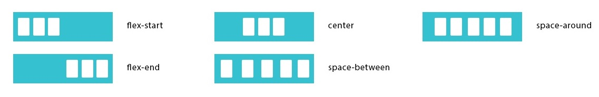

FlexBox

- Main Axis - главная ось (по горизонтали)
- Cross Axis - второстепенная ось (по вертикали)
Display
.flex-container {
display: flex; # задание flex
}
flex-flow: row nowrap
Рекомендуется использовать flex-flow, a не отдельные свойства (работает быстрее)
flex-direction: row
Задаёт направление основных осей в контейнере

.flex-container {
flex-direction: row; # расположение блоков по горизонтали (по умолчанию)
flex-direction: row-reverse; # расположение блоков по горизонтали (реверсионно)
flex-direction: column; # расположение блоков по вертикали
flex-direction: column-reverse; # расположение блоков по вертикали (реверсионно)
}
flex-wrap: nowrap
Задает перенос флексов

.flex-container {
flex-wrap: nowrap; # флексы выстраиваются в одну линию
flex-wrap: wrap; # флексы выстраиваются в несколько строк
flex-wrap: wrap-reverse; # флексы выстраиваются в несколько строк реверсивно
}
justify-content: flex-start
Управляет размещением элемента вдоль главной оси (по горизонтали)

.flex-container {
justify-content: flex-start; # флексы прижаты к началу строки
justify-content: flex-end; # флексы прижаты к концу строки
justify-content: center; # флексы выравниваются по центру строки
justify-content: space-between; # флексы равномерно располагаются с одинаковыми расстояниями между ними (первый и последний элемент прижимаются к краям контейнера)
justify-content: space-around; # флексы равномерно располагаются с одинаковыми расстояниями вокруг них (первый и последний элемент не прижимаются к краям контейнера)
}
align-items: stretch
Управляет размещением элемента вдоль второстепенной оси (по вертикали)

.flex-container {
align-items: flex-start; # флексы выравниваются в начале поперечной оси контейнера
align-items: flex-end; # флексы выравниваются в конце поперечной оси контейнера
align-items: center; # флексы выравниваются по линии поперечной оси
align-items: stretch; # флексы растягиваются таким образом, чтобы занять всё доступное пространство контейнера
align-items: baseline; # флексы выравниваются по их базовой линии (по нижней части параграфа)
}
align-content: stretch
Выравнивание многострочных элементов по вертикали (указывает,
как несколько рядов должны отделяться друг от друга)
align-content отвечает за расстояние между рядами, в то время как align-items
отвечает за то,
как элементы в целом будут выровнены в контейнере. Когда только один ряд, align-content ни на что не влияет

.flex-container {
align-content: flex-start; # флексы располагаются в начале поперечной оси. Каждая следующая строка идёт вровень с предыдущей
align-content: flex-end; # флексы располагаются начиная с конца поперечной оси. Каждая предыдущая строка идёт вровень со следующей
align-content: center; # флексы располагаются по центру контейнер
align-content: space-between; # флексы равномерно располагаются с одинаковыми расстояниями между ними (первый и последний элемент прижимаются к краям контейнера)
align-content: space-around; # флексы равномерно располагаются с одинаковыми расстояниями вокруг них (первый и последний элемент не прижимаются к краям контейнера)
align-content: stretch; # флексы растягиваются, заполняя контейнер равномерно (по умолчанию)
}
flex: 0 1 auto
Блоки растягиваются на всю ширину контейнера (flex = flex-grow = 1)
.flex-element {
flex: auto;
flex: 1;
flex-grow: 1;
}
.flex-element {
flex: 1 1 auto; # занимают равное место, пока влезают
flex: 1 1 250px; # указали фиксированную минимальную ширину
}
flex-grow: 0
Определяет для flex элемента возможность растягиваться по ширине
.flex-element {
flex-grow: 2; # если для всех flex-item, то это равные 2 части от container-flex (заполнят всю ширину блока)
}
flex-shrink: 1
Определяет возможность блока ужиматься при необходимости
Необходимо задать ширину элемента
.flex-element {
flex-shrink: 2;
}
flex-basis: auto
Базовый размер отдельно взятого блока (аналогично min-width)
.flex-element {
flex-basis: 20%; # вместо width
flex-basis: auto; # принимает значение ширины элемента
}
order: 0
Определяет порядок вывода флексов
.flex-element {
order: 0; # по умолчанию у всех элементов
order: 3; # элемент выводится третьим по порядку
order: -1; # элемент выводится первым по порядку
}
align-self: auto
Переопределяет значение свойства align-items
(позволяет вручную управлять выравниванием конкретного элемента)
.flex-element {
align-self: auto; # выравнивать как указано у контейнера (по умолчанию)
align-self: flex-start; # флексы выравниваются в начале поперечной оси контейнера
align-self: flex-end; # флексы выравниваются в конце поперечной оси контейнера
align-self: center; # флексы выравниваются по линии поперечной оси
align-self: stretch; # флексы растягиваются таким образом, чтобы занять всё доступное пространство контейнера
align-self: baseline; # флексы выравниваются по их базовой линии (по нижней части параграфа)
}
Центрирование элемента
.flex-element {
margin: auto; # центрирует 1 блок по горизонтали и вертикали
margin-left: auto; # выравнивает блок по правому краю, а остальные блоки по левому
margin-top: auto;
margin-right: auto;
margin-bottom: auto;
}